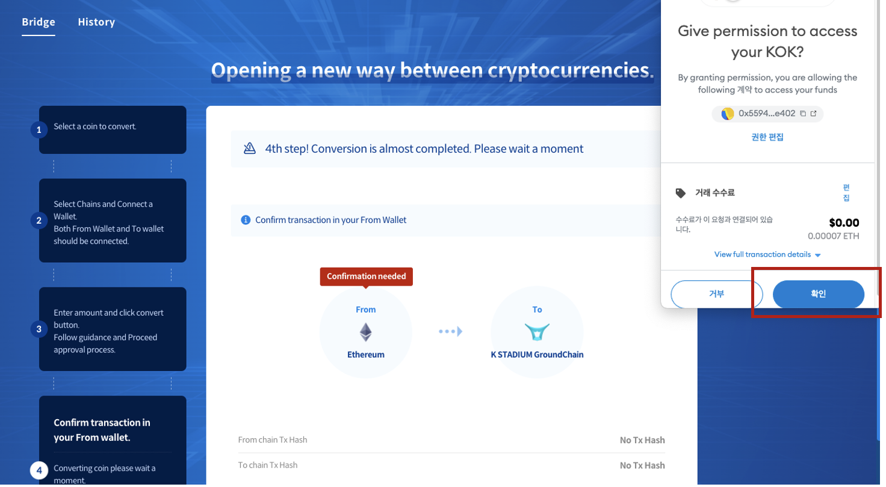

User guide for
K STADIUM Test
Index
Before Testing K STADIUM
Thank you for participating in the K STADIUM App Closed Beta Test! Three steps are required before app testing.
- Sign up for membership after installing the app on Android device through the apk address received from the mail
- Get test KOK and Ethereum using Faucet.
- Send the KOK you received through Bridge to the KSTADIUM network.
Sign up for membership after installing the app on Android device through the apk address received from the mail
- Please download the file by accessing the mail on the Android device and clicking on the apk address.
- Save the file on the device and click saved file to install the app.
🔔
There is a notice saying that unauthorized apps cannot be installed.
Don't press cancel, go to the settings and press the Allow App button. - Run the downloaded app.
- Sign up for the membership in Sign in tap. Please remember the ID and password you entered at this time.
-
Get test KOK and Ethereum using Faucet.
Get test ETH
Proceed with steps below on your PC🔔
What if I don't have a metamask?
Please download Metamask from the Chrome Web Store and proceed to sign up.
Test coins will be given to the metamask first.- Change the metamask network to Ropsten Ethereum.
- Connect to one of Ropsten Ethereum Faucets at the address below. If you can't access, try another Ethereum Faucet.
- Enter your metamask wallet address on the page.
- Click the Send ETH button and get the test ETH
Get test KOK
- Access K STADIUM Faucet to the address below on your PC.
-
Enter your Metamask wallet address on the page.
-
You can get a test KOK by clicking the Send KOK button.
🔔
I can't see the KOK I received in my wallet.
You need to add KOK to your wallet's token list.
Press Import Tokens at the bottom of the metamask to paste the KOK token contract address (0x24d6517616D770DD9FaE8A7C23C4113988eF5895). The token contract address is at the bottom of Faucet.
-
Send the KOK you received through Bridge to the K STADIUM network.
Now, it is necessary to send the received KOK to K STADIUM for use.
Asset transfer is possible through K STADIUM Bridge on your PC.- Change Metamask's network to the Robsten test network and check the asset (KOK).
- Select KOK from Asset.
- Select Ethereum Ropsten from the From chain.
- Connect Metamask to From chain.
- Select K STADIUM GroundChain Testnet from the To chain.
- Connect the K STADIUM Wallet to the To chain. Please enter the ID and password of your membership in K STADIUM.
- Enter the KOK quantity to convert.
- Check the selected chain, quantity, and fee, and click the OK button to proceed with the conversion. Please agree when the desktop notification setting window appears.
.png)
- Proceed with approval processing from the meta mask linked to Fromchain. Approval processing may take more than 5 minutes depending on the network environment.

- For approval of To chain, proceed with approval processing by tapping the Confrim button created separately in the Bridge page. It may take about 5 minutes for the Confirm button to appear.
- Go to the History menu and check the transaction status.
If you went through the above three steps, the app test is ready.
Testing K STADIUM App
What is K STADIUM?
- It is an official wallet that can store tokens in the K STADIUM ecosystem, and it is a blockchain platform that anyone can participate in governance through community pool investment. A simple investment process allows you to acquire a governance token (Stadium Owner Power 'SOP') and delegate it to a proven leader (Stadium Owner 'SO') to participate in the decisions needed for network development. Community Pool's investment amount is used to support the development of blockchain networks and various services, and you can receive guaranteed rewards and additional rewards based on investment performance depending on your investment stake.
The main policy of K STADIUM that you should know before using it
- In the Closed Beta Test, 6 temporary Stadium Owners are selected.
- The minimum amount that can be invested in the community pool is 10 KOK.
- SOP is replaced by a 1:1 ratio with the invested KOK.
- Gas fees occur when investing and delegating.
- The SOP you own can be delegated to the whole and split, and additional delegation is also possible if you invest additionally in the community pool.
🔔
SO: Short for Stadium Owner, the governance representative who votes for the delegated SOP instead.
SOP: Short for Stadium Owner Power, delegated governance token (voting right)
How to use K STADIUM
-
Enter the ID and password used to sign up to proceed with Sign In.
-
Move to the Wallet menu
- Check the received KOK.
-
Tap the SEND TO COMMUNITY POOL button
-
Please agree to the precautions and enter the KOK quantity.
- Check the quantity and fee of KOK and tap the SEND button to send KOK to the community pool.
-
Go to the Wallet menu at the bottom of the app and check the transaction and received SOP.
-
Go to the SO menu at the bottom of the app.
-
Check the details by tapping each SO in the SO list. Choose the SO you want to delegate.
.png)
-
Tap the DELEGATE button on the detailed page of the selected SO.
-
Check the SO you chose and enter the SOP quantity to delegate.
-
Check the SOP quantity and fee and tap the SEND button to delegate SOP to SO.
-
Check the status of delegation and rewards on the detailed page of the delegated SO.
-
Check the details by tapping each SO in the SO list. Choose the SO you want to delegate.
How to submit a bug report.
Please go to the link at the bottom and fill out Google Form. We will select excellent bug report submitters and provide KOK.
Key instructions.
-
Collecting data
The K STADIUM Team collects e-mails for bug reports and test reward guidance. When submitting a pre-registration form, you are considered to agree to collect email addresses.
-
Delete Data
During the Closed Beta Test, all recorded data will be deleted after the end of the test.
-
Official opening schedule and plan
After updating the development through the bug report, we will inform you separately through e-mail.
Thank you for participating in the test.